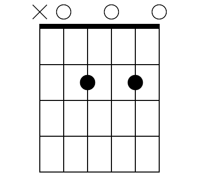

This chord is called A7. Place your fingers in the same place as the A chord but lift the finger holding the middle string.
What is a seventh chord? Think back to the A major scale. See below for a
refresher. The notes you are playing are A B C# D E F# G# A. A typical A major chord involves playing the
notes A C# E. An A7 chord plays the same notes as an A major chord with an additional note: G. Adding a
seventh chord into a song gives it a "jazzy" feel.

Try this new chord below. There are two songs that are suitable for beginner guitarists below. These can
also be found in the songbook tab. Happy Birthday should be familiar to the vast majority of people. Feel free to
look up Satisfaction if you haven't heard this song before. I had not heard
of many of the songs listed on this website until I began playing guitar myself.
The Rolling Stones - (I Can't Get No) Satisfaction
Traditional - Happy Birthday